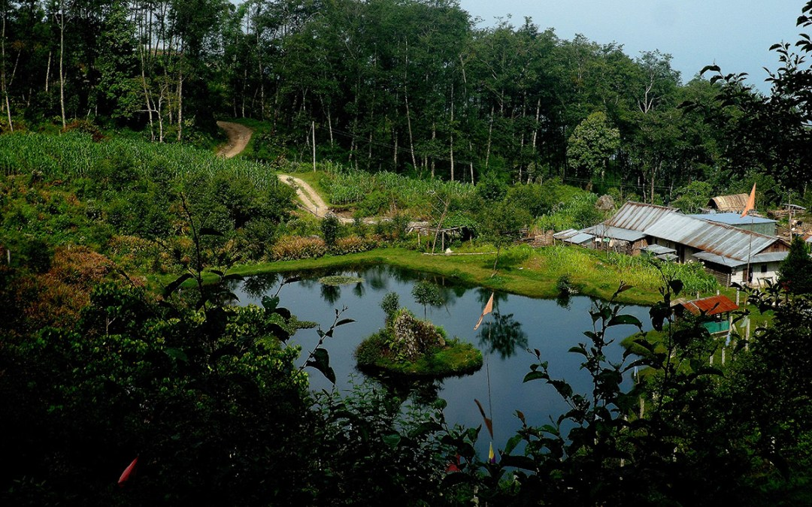
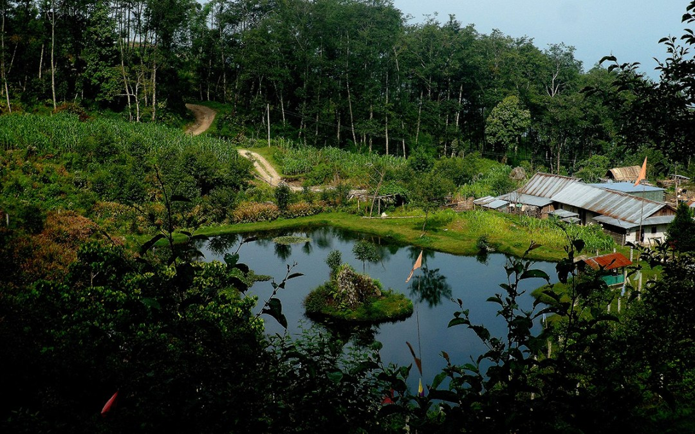

TAPLEJUNG
Trek through Taplejung to see towering Himalayan peaksamid lush rhododendron forests.
Trek through Taplejung in the Kanchenjung region to see towering Himalayan peaks including Mt. Kanchenjunga (8,586 m), the third highest peak in the world, amid lush rhododendron forests.
Opt for the sacred Pathibhara trail and get a Darshan of the wish-fulfilling Goddess. Or search deep into the valleys to see cultural treasures in the mountain settlements and ancient routes.
This is one of the most beautiful areas in the country in the far-eastern Nepal borders with India in the east and the Tibetan Autonomous Region of China in the north. Alpine grasslands, rocky outcrops, dense temperate, sub-tropical forests, and low river valleys make up the area.
Nearby is the Tinjure Milke Jaljale ridge that forms border between Taplejung, Tehrathum and Sankhuwasabha districts. This is an area well known for its bio-diversity including the world's largest natural rhododendron forest with the highest number of rhododendron species in the world.
 Kanchenjunga region falls in Taplejung district of Mechi zone. Taplejung is connected to the rest of Nepal by the 227-km Char Aali-Ilam-Phidim-Taplejung road. There is an air link with Kathmandu and Biratnagar from the STOL airstrip at Suketar. You can also take a bus from Dharan to Dhankuta - Basantapur - Hile and trek from there. In the dry season, bus services are available from Birtamod, Jhapa in East Nepal and from Phidim in Panchthar district. Often an overnight stay is required; otherwise, it is a full day's journey.Tourist facilities are available in Phungling Bazaar and Suketar. While trekking, accommodation facilities have to be arranged along the way. Lodges, teashops and campsites are available en route to Kanchenjunga and Pathibhara.Basic tourist facilities for accommodation and food are available in the area. Private and community-owned campsites are also available. Lodges and home-stays provide local cultural experience.
 Kanchenjunga region falls in Taplejung district of Mechi zone. Taplejung is connected to the rest of Nepal by the 227-km Char Aali-Ilam-Phidim-Taplejung road. There is an air link with Kathmandu and Biratnagar from the STOL airstrip at Suketar. You can also take a bus from Dharan to Dhankuta - Basantapur - Hile and trek from there. In the dry season, bus services are available from Birtamod, Jhapa in East Nepal and from Phidim in Panchthar district. Often an overnight stay is required; otherwise, it is a full day's journey.Tourist facilities are available in Phungling Bazaar and Suketar. While trekking, accommodation facilities have to be arranged along the way. Lodges, teashops and campsites are available en route to Kanchenjunga and Pathibhara.Basic tourist facilities for accommodation and food are available in the area. Private and community-owned campsites are also available. Lodges and home-stays provide local cultural experience.